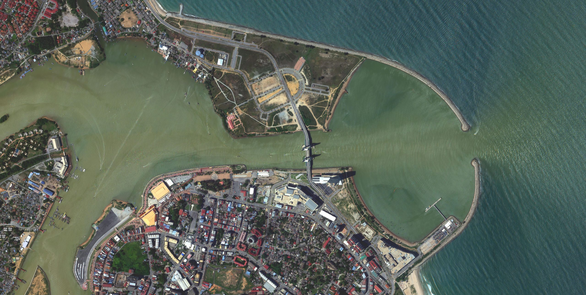
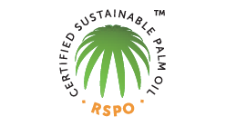

OUR INDUSTRY SOLUTIONS
Our solutions empower industries with advanced data from space, providing unmatched clarity, precision, and insights. From urban planning to environmental monitoring, we offer innovative tools that help you make smarter, data-driven decisions.
PRECISION
AGRICULTURE
Get precise insights into soil and crop health to optimize agricultural productivity and food security. Learn more Plantation
Management
Automate land use classification and ensure sustainable agri-commodities productions. Learn more GROUND
MOVEMENT
Utilize satellite data to monitor GHG emissions, deforestation, and natural disaster risks effectively. Learn more INFRASTRUCTURE
MONITORING
Delivers real-time progress updates for infrastructure projects through high- frequency satellite imagery. Learn more Sustainable Forestry
Management
Offer real-time data to monitor forest health, track deforestation, and optimize conservation efforts for sustainable forestry management. Learn more Environmental
Monitoring
Deliver real-time insights into ecosystem health, pollution levels, and climate change impacts to support effective conservation strategies. Learn more Urban Planning &
Development
Provides critical data for effective land use, infrastructure planning, and sustainable growth in urban areas. Learn more See Better with Uzma Digital Earth.
TAKE IT TO THE
NEXT LEVEL.
Uzma Digital Earth is the solution to your industry challenges. Gain insights into land mapping and analytics today!
Get Your Free Trial NowOUR CLIENTS
Trusted by clients across industries for innovative geospatial and digital mapping solutions.


